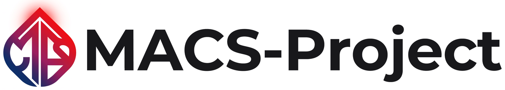

すべての子どもにプログラミングを

CoderDojo（コーダードージョー） 前橋は、参加費無料でプログラミングを学べる小中学生を対象としたプログラミング道場です。
小学校では2020年度からプログラミング教育が必修化され、高校では必履修科目「情報Ⅰ」でプログラミングを学びます。2025年1月からは大学入学共通テストにも「情報Ⅰ」が加わり、プログラミングの問題が出題されています。多くの国公立大学がこの「情報Ⅰ」を受験科目としており、プログラミングは学校でも入試でも欠かせない学びになりました。
参考：令和7年度以降の試験｜大学入試センター
CoderDojo 前橋では、自分で作りたいものを決め、試行錯誤しながら形にしていく体験を、親子でできます。
Facebook 公式ページで活動報告をしています。
CoderDojo とは？
CoderDojo は7〜17歳の子どもを対象にしたプログラミング道場です。2011年にアイルランドで始まり、世界では100か国以上・2,000以上の道場、日本では全国に200以上の道場があります (2025年時点、CoderDojo Japan の公表情報による)。
CoderDojo 前橋は、群馬県唯一の CoderDojo です。
詳しい道場の様子については、次の記事や動画をご参照ください。
- CoderDojoとは? 運営者に話を聞いてみた! (バケモノ.jp)
- 子どものための無料プログラミング道場 CoderDojo をはじめてみませんか (ICT教育ニュース)
- あなたがDojoに来る理由は何ですか? (YouTube)
それぞれインタビュー形式で構成されているので、より具体的なイメージが掴めるかと思います。

CoderDojo 前橋について
CoderDojo 前橋は、2017年4月より月1回活動しています。
CoderDojo 前橋はボランティア活動になりますので、参加費は頂きませんが、参加にはプログラミング環境がインストールされたパソコン等の持ち込みが原則必要となります。機材の貸し出しもいたしますので、お気軽にお問い合わせください。
活動内容は、自分自身でクリエイティブな作業をすることが中心になります。予め決まったカリキュラムがあるわけではありません。自分が何を作りたいのか、何をしたいのか、考えながら作業をしていくことになります。それがプログラミングを身に付けるための一番の近道だと思っているからです。
プログラミングを始めたいけど、何をして良いか分からない、どんなツールがあるか知りたい、などの相談にも乗ります。
活動時間の最後にお子様が発表する時間を設けています。自分の作品について話す機会というのは普段あまりないと思いますので、貴重な時間ではないかと思います。
また、原則保護者同伴となっております。お子様同士だけでなく、保護者の方同士の繋がりも大切にしています。
- CoderDojo 代表：関口 悠
-
群馬県前橋市在住。
とあるネット企業に勤務している元高校教師。
情報処理安全確保支援士（登録セキスペ）、マイクロソフト認定教育イノベーター、Google for Education 認定トレーナー、micro:bit champions、Apple Teacher としても活動している。
日程について
参加のお申込みは、直前の回のみ受け付けています。詳しくは参加者向けの案内をご覧ください。
- 第111回
-
2026年10月18日（日） 10:00～12:00
場所：NETSUGEN – 群馬県庁32階官民共創スペース
共催：
- 第112回
-
2026年11月15日（日） 10:00～12:00
場所：NETSUGEN – 群馬県庁32階官民共創スペース
共催：
- 第113回
-
2026年12月20日（日） 10:00～12:00
場所：NETSUGEN – 群馬県庁32階官民共創スペース
共催：
- 第1回
- 2017年4月16日（日） 10:00～12:00
- 第2回
- 2017年5月21日（日） 10:00～12:00
- 第3回
- 2017年6月11日（日） 10:00～12:00
- 第4回
- 2017年7月16日（日） 10:00～12:00
- 第5回
- 2017年8月6日（日） 10:00～12:00
- 第6回
- 2017年9月10日（日） 10:00～12:00
- 第7回
- 2017年10月14日（土） 10:00～12:00
- 第8回
- 2017年11月5日（日） 10:00～12:00
- 第9回
- 2017年12月10日（日） 10:00～12:00
- 第10回
- 2018年2月4日（日） 10:00～12:00
- 第11回
-
2018年3月4日（日） 10:00～12:00
- 第12回
-
2018年4月15日（日） 10:00～12:00
- 第13回
-
2018年5月20日（日） 10:00～12:00
- 第14回
-
2018年6月17日（日） 10:00～12:00
- 第15回
-
2018年7月15日（日） 10:00～12:00
- 第16回
-
2018年8月5日（日） 10:00～12:00
- 第17回
-
2018年9月16日（日） 10:00～12:00
- 第18回
-
2018年10月14日（日） 10:00～12:00
- 第19回
-
2018年11月18日（日） 10:00～12:00
- 第20回
-
2018年12月9日（日） 10:00～12:00
- 第21回
-
2019年1月13日（日） 10:00～12:00
- 第22回
-
2019年2月10日（日） 10:00～12:00
- 第23回
-
2019年3月10日（日） 10:00～12:00
- 第24回
-
2019年4月14日（日） 10:00～12:00
- 第25回
-
2019年5月19日（日） 10:00～12:00
- 第26回
-
2019年6月16日（日） 10:00～12:00
- 第27回
-
2019年7月21日（日） 10:00～12:00
- 第28回
-
2019年8月18日（日） 10:00～12:00
- 第29回
-
2019年9月8日（日） 10:00～12:00
- 第30回
-
2019年10月20日（日） 10:00～12:00
- 第31回
-
2019年11月3日（日） 10:00～12:00
- 第32回
-
2019年12月15日（日） 10:00～12:00
- 第33回
-
2020年1月26日（日） 10:00～12:00
- 第34回
-
2020年2月16日（日） 10:00～12:00
- 第35回
-
2020年4月19日（日） 10:00～12:00
場所：オンライン
- 第36回
-
2020年5月17日（日） 10:00～12:00
場所：オンライン
- 第37回
-
2020年6月21日（日） 10:00～12:00
場所：オンライン
- 第38回
-
2020年7月19日（日） 10:00～12:00
場所：オンライン
- 第39回
-
2020年8月23日（日） 10:00～12:00
場所：オンライン
- 第40回
-
2020年9月13日（日） 10:00～12:00
場所：オンライン
- 第41回
-
2020年10月18日（日） 10:00～12:00
場所：オンライン
- 第42回
-
2020年11月15日（日） 10:00～12:00
場所：オンライン
- 第43回
-
2020年12月20日（日） 10:00～12:00
場所：オンライン
- 第44回
-
2021年1月17日（日） 10:00～12:00
場所：オンライン
- 第45回
-
2021年2月21日（日） 10:00～12:00
場所：オンライン
- 第46回
-
2021年3月21日（日） 10:00～12:00
場所：NETSUGEN – 群馬県庁32階官民共創スペース
及び オンライン
- 第47回
-
2021年4月18日（日） 10:00～12:00
場所：NETSUGEN – 群馬県庁32階官民共創スペース
及び オンライン
- 第48回
-
2021年5月16日（日） 10:00～12:00
場所：オンラインのみ
- 第49回
-
2021年6月20日（日） 10:00～12:00
場所：オンラインのみ
- 第50回
-
2021年7月18日（日） 10:00～12:00
場所：NETSUGEN – 群馬県庁32階官民共創スペース
- 第51回
-
2021年8月22日（日） 10:00～12:00
場所：オンラインのみ
- 第52回
-
2021年9月19日（日） 10:00～12:00
場所：オンラインのみ
- 第53回
-
2021年10月24日（日） 10:00～12:00
場所：NETSUGEN – 群馬県庁32階官民共創スペース
- 第54回
-
2021年11月28日（日） 10:00～12:00
場所：NETSUGEN – 群馬県庁32階官民共創スペース
- 第55回
-
2021年12月12日（日） 10:00～12:00
場所：NETSUGEN – 群馬県庁32階官民共創スペース
- 第56回
-
2022年1月16日（日） 10:00～12:00
場所：NETSUGEN – 群馬県庁32階官民共創スペース
- 第57回
-
2022年2月20日（日） 10:00～12:00
場所：オンライン
- 第58回
-
2022年3月20日（日） 10:00～12:00
場所：オンライン
- 第59回
-
2022年4月17日（日） 10:00～12:00
場所：NETSUGEN – 群馬県庁32階官民共創スペース
- 第60回
-
2022年5月15日（日） 10:00～12:00
場所：NETSUGEN – 群馬県庁32階官民共創スペース
- 第61回
-
2022年6月19日（日） 10:00～12:00
場所：NETSUGEN – 群馬県庁32階官民共創スペース
- 第62回
-
2022年7月24日（日） 10:00～12:00
場所：NETSUGEN – 群馬県庁32階官民共創スペース
- 第63回
-
2022年8月28日（日） 10:00～12:00
場所：NETSUGEN – 群馬県庁32階官民共創スペース
- 第64回
-
2022年9月18日（日） 10:00～12:00
場所：NETSUGEN – 群馬県庁32階官民共創スペース
- 第65回
-
2022年10月16日（日） 10:00～12:00
場所：NETSUGEN – 群馬県庁32階官民共創スペース
- 第66回
-
2022年11月20日（日） 10:00～12:00
場所：NETSUGEN – 群馬県庁32階官民共創スペース
- 第67回
-
2022年12月18日（日） 10:00～12:00
場所：NETSUGEN – 群馬県庁32階官民共創スペース
- 第68回
-
2023年1月22日（日） 10:00～12:00
場所：NETSUGEN – 群馬県庁32階官民共創スペース
- 第69回
-
2023年2月19日（日） 10:00～12:00
場所：NETSUGEN – 群馬県庁32階官民共創スペース
- 第70回
-
2023年3月19日（日） 10:00～12:00
場所：NETSUGEN – 群馬県庁32階官民共創スペース
- 第71回
-
2023年4月16日（日） 10:00～12:00
場所：NETSUGEN – 群馬県庁32階官民共創スペース
協賛：
- 第72回
-
2023年5月21日（日） 10:00～12:00
場所：NETSUGEN – 群馬県庁32階官民共創スペース
協賛：
- 第73回
-
2023年6月18日（日） 10:00～12:00
場所：NETSUGEN – 群馬県庁32階官民共創スペース
協賛：
- 第74回
-
2023年7月16日（日） 10:00～12:00
場所：NETSUGEN – 群馬県庁32階官民共創スペース
協賛：
- 第75回
-
2023年8月27日（日） 10:00～12:00
場所：NETSUGEN – 群馬県庁32階官民共創スペース
協賛：
- 第76回
-
2023年9月10日（日） 10:00～12:00
場所：NETSUGEN – 群馬県庁32階官民共創スペース
協賛：
- 第77回
-
2023年10月29日（日） 10:00～12:00
場所：NETSUGEN – 群馬県庁32階官民共創スペース
協賛：
- 第78回
-
2023年11月12日（日） 10:00～12:00
場所：NETSUGEN – 群馬県庁32階官民共創スペース
協賛：
- 第79回
-
2023年12月17日（日） 10:00～12:00
場所：NETSUGEN – 群馬県庁32階官民共創スペース
協賛：
- 第80回
-
2024年1月21日（日） 10:00～12:00
場所：NETSUGEN – 群馬県庁32階官民共創スペース
協賛：
- 第81回
-
2024年2月18日（日） 10:00～12:00
場所：NETSUGEN – 群馬県庁32階官民共創スペース
協賛：
- 第82回
-
2024年3月17日（日） 10:00～12:00
場所：NETSUGEN – 群馬県庁32階官民共創スペース
協賛：
- 第83回
-
2024年4月14日（日） 10:00～12:00
場所：NETSUGEN – 群馬県庁32階官民共創スペース
協賛：
- 第84回
-
2024年5月12日（日） 10:00～12:00
場所：NETSUGEN – 群馬県庁32階官民共創スペース
協賛：
- 第85回
-
2024年6月16日（日） 10:00～12:00
場所：NETSUGEN – 群馬県庁32階官民共創スペース
協賛：
- 第86回
-
2024年7月21日（日） 10:00～12:00
場所：NETSUGEN – 群馬県庁32階官民共創スペース
協賛：
- 第87回
-
2024年8月18日（日） 10:00～12:00
場所：NETSUGEN – 群馬県庁32階官民共創スペース
協賛：
- 第88回
-
2024年9月8日（日） 10:00～12:00
場所：NETSUGEN – 群馬県庁32階官民共創スペース
協賛：
- 第89回
-
2024年10月19日（土） 10:00～12:00
場所：NETSUGEN – 群馬県庁32階官民共創スペース
協賛：
- 第90回
-
2024年11月17日（日） 10:00～12:00
場所：NETSUGEN – 群馬県庁32階官民共創スペース
協賛：
- 第91回
-
2024年12月15日（日） 10:00～12:00
場所：NETSUGEN – 群馬県庁32階官民共創スペース
協賛：
- 第92回
-
2025年1月26日（日） 10:00～12:00
場所：NETSUGEN – 群馬県庁32階官民共創スペース
協賛：
- 第93回
-
2025年3月16日（日） 10:00～12:00
場所：NETSUGEN – 群馬県庁32階官民共創スペース
協賛：
- 第94回
-
2025年4月27日（日） 10:00～12:00
場所：NETSUGEN – 群馬県庁32階官民共創スペース
協賛：
- 第95回
-
2025年5月18日（日） 10:00～12:00
場所：NETSUGEN – 群馬県庁32階官民共創スペース
協賛：
- 第96回
-
2025年6月15日（日） 10:00～12:00
場所：NETSUGEN – 群馬県庁32階官民共創スペース
協賛：
- 第97回
-
2025年7月20日（日） 10:00～12:00
場所：NETSUGEN – 群馬県庁32階官民共創スペース
協賛：
- 第98回
-
2025年8月24日（日） 10:00～12:00
場所：NETSUGEN – 群馬県庁32階官民共創スペース
協賛：
- 第99回
-
2025年9月21日（日） 10:00～12:00
場所：NETSUGEN – 群馬県庁32階官民共創スペース
協賛：
- 第100回
-
2025年11月24日（月） 10:00～12:00
場所：群馬県庁31階 ソーシャルマルシェ&キッチン『GINGHAM（ギンガム）』
主催：ソーシャルマルシェ&キッチン『GINGHAM（ギンガム）』
協力：CoderDojo 前橋
- 第101回
-
2025年12月20日（土） 10:00～12:00
場所：NETSUGEN – 群馬県庁32階官民共創スペース
協賛：
- 第102回
-
2026年1月17日（土） 10:00～12:00
場所：NETSUGEN – 群馬県庁32階官民共創スペース
協賛：
- 第103回
-
2026年2月22日（日） 10:00～12:00
場所：NETSUGEN – 群馬県庁32階官民共創スペース
協賛：
- 第104回
-
2026年3月15日（日） 10:00～12:00
場所：NETSUGEN – 群馬県庁32階官民共創スペース
協賛：
- 第105回
-
2026年4月12日（日） 10:00～12:00
場所：NETSUGEN – 群馬県庁32階官民共創スペース
共催：
- 第106回
-
2026年5月10日（日） 10:00～12:00
場所：NETSUGEN – 群馬県庁32階官民共創スペース
共催：
- 第107回
-
2026年6月21日（日） 10:00～12:00
場所：NETSUGEN – 群馬県庁32階官民共創スペース
共催：
- 第108回
-
2026年7月12日（日） 10:00～12:00
場所：NETSUGEN – 群馬県庁32階官民共創スペース
共催：
- 第109回
-
2026年8月23日（日） 10:00～12:00
場所：NETSUGEN – 群馬県庁32階官民共創スペース
共催：
- 第110回
-
2026年9月13日（日） 10:00～12:00
場所：NETSUGEN – 群馬県庁32階官民共創スペース
共催：
Google カレンダー
参加者募集について
参加についてのお問い合わせは、NETSUGEN のセミナーページからお願いいたします。
お申込みは、原則として直前の回のみ受け付けています。
セミナー・交流事業 – NETSUGENメンター募集について
現在、CoderDojo 前橋では、一緒に活動してくれるメンターを募集しています。 Scratch や Minecraft を使ったことがある方なら大歓迎です。
メンター希望の方は、下記メールアドレスまで連絡をお願いいたします。
maebashi.jp@coderdojo.com